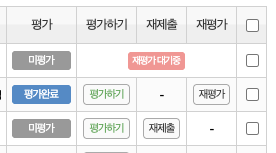

Links
필요한 링크 모음
weekly 매주 사용하는 링크
Check List
매주 체크리스트
매 수업 전후로 확인할 항목입니다.
사전 강의 내용 숙지
해당 주차 정규수업 영상 · 강의자료 · 과제 확인
사전 과제 검토 및 평가 입력
통합과제관리에서 과제 확인 후 100점 입력 · 출석부에 과제 제출 체크
수업 1시간 전 소통 채널 공지
진행 일시 전달 및 참여 독려 메시지 발송
10분 전 음성 채널 접속
네트워크 및 마이크 환경 점검
멘토링 녹화 확인
OBS 하단 녹화 카운터 확인 (자동 시작) · 미시작 시 F9 (Mac: fn+F9) 수동 시작
녹화 종료 및 업로드 확인
F9로 종료 후 공유 드라이브 멘토님 폴더에 파일 확인
출결 점검
출석부에서 멘토링 및 과제 출결 확인
미제출·미참여 수강생 팔로업
관련 자료 공유 또는 과제 리마인드 발송
0 / 8 완료
FAQ
자주 묻는 질문
디스코드 좌측 하단 마이크 아이콘 옆 화살표 → 음성 설정에서 '눌러서 말하기'가 켜져 있으면 꺼 주세요.
그래도 해결되지 않으면 기기 설정에서 디스코드의 마이크 권한이 켜져 있는지 확인합니다.
(자세히 보기)
OBS는 녹화에 담기는 소리와 내가 듣는 소리(모니터링)가 별개라 생기는 문제입니다.
- 오디오 믹서 톱니바퀴 → 고급 오디오 속성 → 마이크/Aux와 데스크톱 오디오를 모두 '모니터링 끔'으로 설정
- 마이크/Aux → 속성 → 장치를 '기본 장치'가 아닌 실제 쓰는 마이크로 지정
구글 드라이브 데스크톱 앱이 백그라운드에서 업로드를 진행 중일 수 있습니다.
- 드라이브 앱을 실행해 동기화가 완료되었는지 확인해 주세요. 완료되면 웹에서도 표시됩니다.
- 업로드 완료 전에 PC를 종료하면 업로드가 중단될 수 있습니다.
- 파일 용량이 큰 경우 네트워크 상황에 따라 수십 분이 걸릴 수 있습니다.
여러 클래스의 멘토링이 동시에 진행될 경우, 출결 반영에 시간이 소요될 수 있습니다. 잠시 기다려주신 후 출석부를 다시 확인해주시면 감사하겠습니다.
수강생이 서버 닉네임을 "이름_전화번호 뒤 4자리"로 설정하지 않은 경우, 출결이 반영되지 않을 수 있습니다. 이 경우, 수강생에게 닉네임 변경을 안내해 주세요.
수강생이 서버 닉네임을 "이름_전화번호 뒤 4자리"로 설정하지 않은 경우, 출결이 반영되지 않을 수 있습니다. 이 경우, 수강생에게 닉네임 변경을 안내해 주세요.
LMS 교육통합관리시스템 내 통합과제관리에서 재제출 및 재평가 처리를 할 수 있습니다.

- 재제출 : 평가 완료 전 과제 재제출 요청 시, 과제를 다시 제출할 수 있도록 변경합니다.
- 재제출 처리 시, 해당 과제는 제출 과제 목록에서 삭제됩니다.
- 재평가 : 점수 기입 및 평가 완료 후 재제출 요청 시, 과제를 다시 제출할 수 있도록 변경합니다.
- 재평가 처리 시, 수강생이 과제를 다시 제출하기 전까지 "재평가 대기중"으로 표시됩니다.
수강생과 같은 화면으로 강의 영상 및 자료와 과제를 확인하실 수 있도록 지급드려, 학습 독려 메시지를 받으실 수 있습니다.
- 학습 독려 메시지는 [02-332-1277] 번호로 발송됩니다.
- 멘토님 공지사항은 디스코드, 카카오 알림톡 및 [070-7771-8297] 번호로 전달드립니다.
디스코드 상단 "멘토님-문의사항" 채널에 말씀해주시면 최대한 빠르게 확인 후 안내 도와드리겠습니다. 협조해 주셔서 감사합니다.